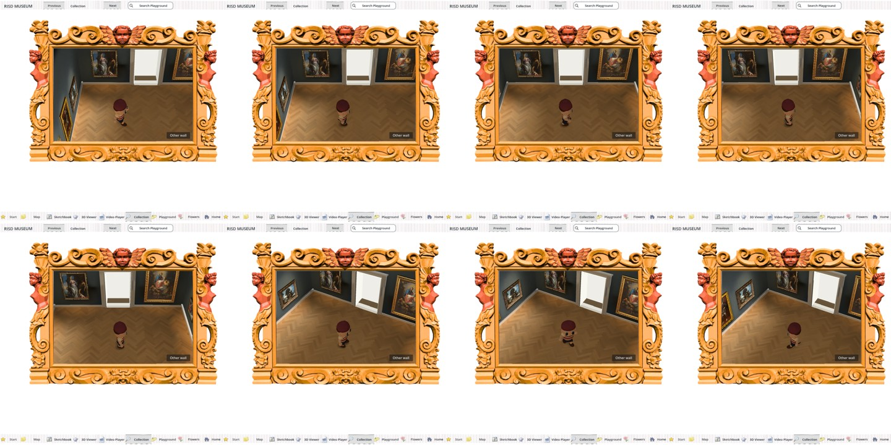
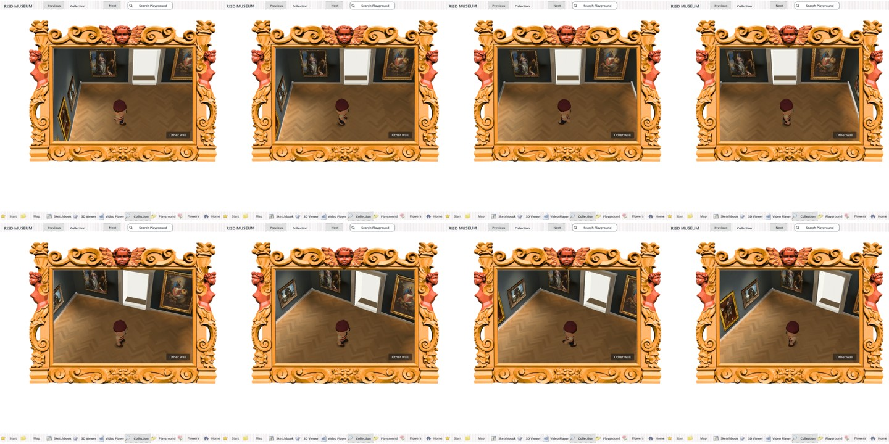
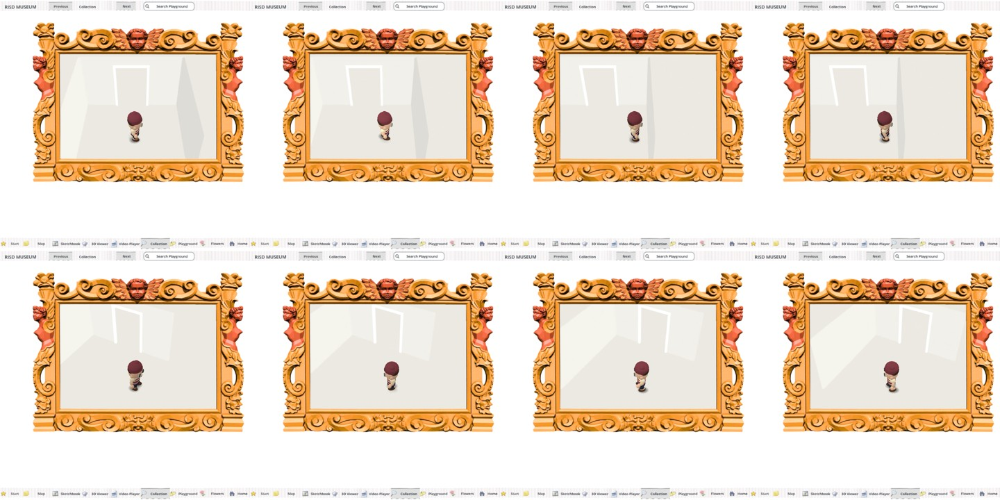
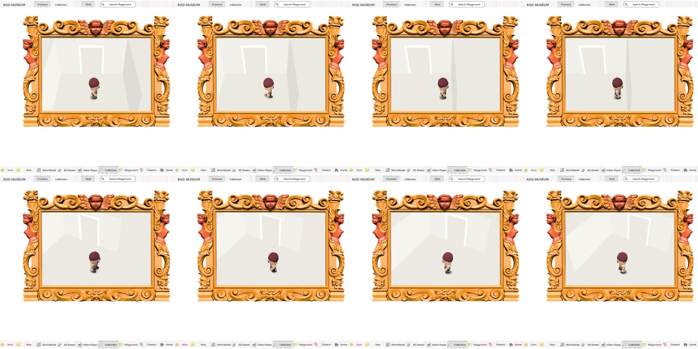

Square gallery Web display comparison
Matched 1080-square exported browser captures. The A/B key is withheld from this visual packet.
References


A: warm gallery

B: warm gallery

A: white room

B: white room
